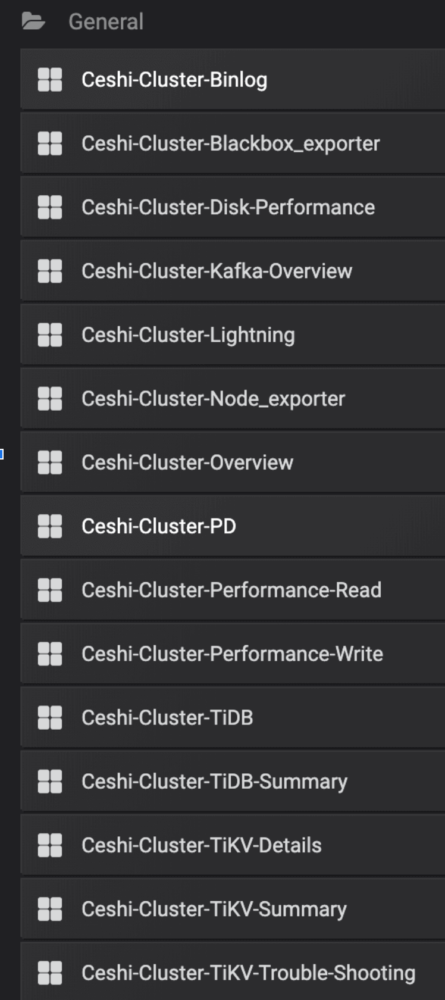

<!DOCTYPE html>
<html lang="en">
<head>
  <meta charset="utf-8">
  <meta http-equiv="X-UA-Compatible" content="IE=edge,chrome=1">
  <title>沙盘点将 - TiDB 监控知识初始化 - TiDB AirPlan - A biger solution</title>
  <meta name="renderer" content="webkit" />
<meta name="viewport" content="width=device-width, initial-scale=1, maximum-scale=1"/>

<meta http-equiv="Cache-Control" content="no-transform" />
<meta http-equiv="Cache-Control" content="no-siteapp" />

<meta name="theme-color" content="#f8f5ec" />
<meta name="msapplication-navbutton-color" content="#f8f5ec">
<meta name="apple-mobile-web-app-capable" content="yes">
<meta name="apple-mobile-web-app-status-bar-style" content="#f8f5ec">


<meta name="author" content="Jeff" /><meta name="description" content="0x00 点点滴滴 之前有篇文档是 纸上谈兵 - TiDB 性能调优，仅仅这篇文档无法承载想表达的豪言壮语，因此出现了一话三联内容，分别是 纸上谈兵（性能调优逻辑、S" /><meta name="keywords" content="TiDB, AirPlan, TiDB OPS, tidb-operator, 2pc, raft, databases, mysql, htap" />


<meta name="generator" content="Hugo 0.63.2 with theme even" />


<link rel="canonical" href="https://ap.tidb.cc/post/20200416-16-init-monitoring-map/" />
<link rel="apple-touch-icon" sizes="180x180" href="/apple-touch-icon.png">
<link rel="icon" type="image/png" sizes="32x32" href="/favicon-32x32.png">
<link rel="icon" type="image/png" sizes="16x16" href="/favicon-16x16.png">
<link rel="manifest" href="/manifest.json">
<link rel="mask-icon" href="/safari-pinned-tab.svg" color="#5bbad5">

<script async src="//busuanzi.ibruce.info/busuanzi/2.3/busuanzi.pure.mini.js"></script>
<link href="/dist/even.04bd84cd.min.css" rel="stylesheet">
<link rel="stylesheet" href="https://cdn.jsdelivr.net/npm/@fancyapps/fancybox@3.1.20/dist/jquery.fancybox.min.css" integrity="sha256-7TyXnr2YU040zfSP+rEcz29ggW4j56/ujTPwjMzyqFY=" crossorigin="anonymous">


<meta property="og:title" content="沙盘点将 - TiDB 监控知识初始化" />
<meta property="og:description" content="0x00 点点滴滴 之前有篇文档是 纸上谈兵 - TiDB 性能调优，仅仅这篇文档无法承载想表达的豪言壮语，因此出现了一话三联内容，分别是 纸上谈兵（性能调优逻辑、S" />
<meta property="og:type" content="article" />
<meta property="og:url" content="https://ap.tidb.cc/post/20200416-16-init-monitoring-map/" />
<meta property="article:published_time" content="2020-04-16T00:00:00+08:00" />
<meta property="article:modified_time" content="2020-04-16T00:00:00+08:00" />
<meta itemprop="name" content="沙盘点将 - TiDB 监控知识初始化">
<meta itemprop="description" content="0x00 点点滴滴 之前有篇文档是 纸上谈兵 - TiDB 性能调优，仅仅这篇文档无法承载想表达的豪言壮语，因此出现了一话三联内容，分别是 纸上谈兵（性能调优逻辑、S">
<meta itemprop="datePublished" content="2020-04-16T00:00:00&#43;08:00" />
<meta itemprop="dateModified" content="2020-04-16T00:00:00&#43;08:00" />
<meta itemprop="wordCount" content="3374">


<meta itemprop="keywords" content="TiDB,performance,monitoring," /><meta name="twitter:card" content="summary"/>
<meta name="twitter:title" content="沙盘点将 - TiDB 监控知识初始化"/>
<meta name="twitter:description" content="0x00 点点滴滴 之前有篇文档是 纸上谈兵 - TiDB 性能调优，仅仅这篇文档无法承载想表达的豪言壮语，因此出现了一话三联内容，分别是 纸上谈兵（性能调优逻辑、S"/>

<!--[if lte IE 9]>
  <script src="https://cdnjs.cloudflare.com/ajax/libs/classlist/1.1.20170427/classList.min.js"></script>
<![endif]-->

<!--[if lt IE 9]>
  <script src="https://cdn.jsdelivr.net/npm/html5shiv@3.7.3/dist/html5shiv.min.js"></script>
  <script src="https://cdn.jsdelivr.net/npm/respond.js@1.4.2/dest/respond.min.js"></script>
<![endif]-->

</head>
<body>
  <div id="mobile-navbar" class="mobile-navbar">
  <div class="mobile-header-logo">
    <a href="/" class="logo">TiDB AirPlan</a>
  </div>
  <div class="mobile-navbar-icon">
    <span></span>
    <span></span>
    <span></span>
  </div>
</div>
<nav id="mobile-menu" class="mobile-menu slideout-menu">
  <ul class="mobile-menu-list">
    <a href="/post/">
        <li class="mobile-menu-item">Blog</li>
      </a><a href="/look/">
        <li class="mobile-menu-item">Look</li>
      </a><a href="/tags/">
        <li class="mobile-menu-item">Tags</li>
      </a><a href="/categories/">
        <li class="mobile-menu-item">Categories</li>
      </a><a href="/about/">
        <li class="mobile-menu-item">About</li>
      </a>
  </ul>
</nav>
  <div class="container" id="mobile-panel">
    <header id="header" class="header">
        <div class="logo-wrapper">
  <a href="/" class="logo">TiDB AirPlan</a>
</div>

<nav class="site-navbar">
  <ul id="menu" class="menu">
    <li class="menu-item">
        <a class="menu-item-link" href="/post/">Blog</a>
      </li><li class="menu-item">
        <a class="menu-item-link" href="/look/">Look</a>
      </li><li class="menu-item">
        <a class="menu-item-link" href="/tags/">Tags</a>
      </li><li class="menu-item">
        <a class="menu-item-link" href="/categories/">Categories</a>
      </li><li class="menu-item">
        <a class="menu-item-link" href="/about/">About</a>
      </li>
  </ul>
</nav>
    </header>

    <main id="main" class="main">
      <div class="content-wrapper">
        <div id="content" class="content">
          <article class="post">
    
    <header class="post-header">
      <h1 class="post-title">沙盘点将 - TiDB 监控知识初始化</h1>

      <div class="post-meta">
        <span class="post-time"> 2020-04-16 </span>
        <div class="post-category">
            <a href="/categories/tidb/"> TiDB </a>
            <a href="/categories/monitoring/"> monitoring </a>
            </div>
          <span class="more-meta"> 3374 words </span>
          <span class="more-meta"> 7 mins read </span>
        <span id="busuanzi_container_page_pv" class="more-meta"> <span id="busuanzi_value_page_pv"></span> times read </span>
      </div>
    </header>

    <div class="post-toc" id="post-toc">
  <h2 class="post-toc-title">Contents</h2>
  <div class="post-toc-content">
    <nav id="TableOfContents">
  <ul>
    <li><a href="#0x00-点点滴滴">0x00 点点滴滴</a></li>
    <li><a href="#0x01-监控">0x01 监控</a>
      <ul>
        <li><a href="#那些事">那些事</a></li>
        <li><a href="#资料片">资料片</a></li>
      </ul>
    </li>
    <li><a href="#0x02-星星点灯">0x02 星星点灯</a>
      <ul>
        <li><a href="#in-client">in Client</a></li>
        <li><a href="#p-sql">P-SQL</a></li>
        <li><a href="#dashboard">Dashboard</a></li>
      </ul>
    </li>
    <li><a href="#0x03-sql-life">0x03 SQL Life</a></li>
  </ul>
</nav>
  </div>
</div>
    <div class="post-content">
      <h2 id="0x00-点点滴滴">0x00 点点滴滴</h2>
<p>之前有篇文档是 <a href="/post/20200311-11-performance-map/" title="ap.tidb.cc">纸上谈兵 - TiDB 性能调优</a>，仅仅这篇文档无法承载想表达的豪言壮语，因此出现了一话三联内容，分别是 纸上谈兵（性能调优逻辑、SQL 资源过五关斩六将一路顺风）、沙盘点将（监控概要、踏马观花一目十行的机密所在）、九死一生（问题处理、千军万马一将在，探囊取物有何难？） 三部曲，本次将通过少量图文描述下监控围观方式。</p>
<blockquote>
<p>本文内容来自 PingCAP 官方培训，然后文字话简述下（不要问我要视频，我没有）# 2020 年 3 月左右的官方活动</p>
</blockquote>
<h2 id="0x01-监控">0x01 监控</h2>
<p></p>
<p>Grafana Prometheus 的监控平台架构本次不在多说了，这部分内容可以看浏览下以往文档<a href="/categories/monitoring/">站内分类 - monitoring</a></p>
<h3 id="那些事">那些事</h3>
<blockquote>
<p>以下内容原文手打翻译</p>
</blockquote>
<ul>
<li>
<p>清理 Prometheus 中残留的 TiKV 监控数据</p>
<ul>
<li>使用 Prometheus 2.1 以上版本</li>
<li>打开 &ndash;web.enable-admin-api 参数；详情看官网 <a href="https://prometheus.io/docs/prometheus/latest/querying/api/#tsdb-admin-apis">Prometheus Admin api</a></li>
<li><code>curl -X POST -g 'http://127.0.0.1:9090/api/v1/admin/tsdb/delete_series?match[]={instance=&quot;10.0.1.4:20181&quot;,job=&quot;tikv&quot;}'</code></li>
</ul>
</li>
<li>
<p>Prometheus 是否可以做审计场景</p>
<ul>
<li>此处跳过 / 以前文档有说明</li>
</ul>
</li>
</ul>
<blockquote>
<p>Grafana 看不到数据</p>
</blockquote>
<ul>
<li>metrics 本身没有数据
<ul>
<li>事物运行时没有触发到 metrics 逻辑</li>
</ul>
</li>
<li>网络防火墙阻断（下方默认端口列表）
<ul>
<li>云虚拟机检查 安全组 规则</li>
<li>物理机环境检查 硬件防火墙 规则</li>
</ul>
</li>
<li>配置文件不正确
<ul>
<li>依次检查 tidb metrics-status port、prometheus 配置文件、grafana 配置参数</li>
</ul>
</li>
<li>目标组件进程退出
<ul>
<li>进入 tidb-ansible 目录【使用前建议先阅读 ansible 文档，不要像我一样差点折腾挂集群】</li>
<li><code>ansible tidb_servers -m shell -a “ps aux ｜ grep tidb-server”</code> 依次查看 tidb pd tikv 组件</li>
</ul>
</li>
<li>目标组件端口冲突
<ul>
<li>TiDB、TiKV metrics-status 端口冲突不影响启动，会影响监控数据展示</li>
</ul>
</li>
</ul>
<table>
<thead>
<tr>
<th>组件</th>
<th>默认端口</th>
<th>说明</th>
</tr>
</thead>
<tbody>
<tr>
<td>TiDB</td>
<td>4000</td>
<td>应用及 DBA 工具访问通信端口</td>
</tr>
<tr>
<td>TiDB</td>
<td>10080</td>
<td>TiDB 状态信息上报通信端口</td>
</tr>
<tr>
<td>TiKV</td>
<td>20160</td>
<td>TiKV 通信端口</td>
</tr>
<tr>
<td>PD</td>
<td>2379</td>
<td>提供 TiDB 和 PD 通信端口</td>
</tr>
<tr>
<td>PD</td>
<td>2380</td>
<td>PD 集群节点间通信端口</td>
</tr>
<tr>
<td>Pump</td>
<td>8250</td>
<td>Pump 通信端口</td>
</tr>
<tr>
<td>Drainer</td>
<td>8249</td>
<td>Drainer 通信端口</td>
</tr>
<tr>
<td>Prometheus</td>
<td>9090</td>
<td>Prometheus 服务通信端口</td>
</tr>
<tr>
<td>Pushgateway</td>
<td>9091</td>
<td>tikv-importer 聚合和上报端口</td>
</tr>
<tr>
<td>Node_exporter</td>
<td>9100</td>
<td>TiDB 集群每个节点的系统信息上报通信端口</td>
</tr>
<tr>
<td>Blackbox_exporter</td>
<td>9115</td>
<td>Blackbox_exporter 通信端口，用于 TiDB 集群端口监控</td>
</tr>
<tr>
<td>Grafana</td>
<td>3000</td>
<td>Web 监控服务对外服务和客户端(浏览器)访问端口</td>
</tr>
<tr>
<td>Grafana</td>
<td>8686</td>
<td>grafana_collector 通信端口，用于将 Dashboard 导出为 PDF 格式</td>
</tr>
<tr>
<td>Kafka_exporter</td>
<td>9308</td>
<td>Kafka_exporter 通信端口，用于监控 binlog kafka 集群</td>
</tr>
</tbody>
</table>
<h3 id="资料片">资料片</h3>
<ul>
<li>TiKV in Prometheus【中文】描述如何在 TiKV 中设置“检查点”用于统计、收集 TiKV-server 运行信息
<ul>
<li><a href="https://pingcap.com/blog-cn/tikv-source-code-reading-3/" title="ap.tidb.cc">TiKV 源码解析系列文章（三）Prometheus（上）</a></li>
<li><a href="https://pingcap.com/blog-cn/tikv-source-code-reading-4/" title="ap.tidb.cc">TiKV 源码解析系列文章（四）Prometheus（下）</a></li>
<li><a href="https://pingcap.com/blog-cn/use-grafana-to-monitor-and-analyze-tidb-metrics/" title="ap.tidb.cc">如何高效利用 Grafana 监控分析 TiDB 指标</a></li>
</ul>
</li>
</ul>
<h2 id="0x02-星星点灯">0x02 星星点灯</h2>
<blockquote>
<p>TiDB 监控千千万万，只有理解了这些监控才能做到天下万物为我所用的“成就色霸气”<br>
通过三小步理解来分解人类三大疑问：监控怎么来的？监控怎么用？监控干了啥？<br>
先放张图理解下啥叫丰富多彩？</p>
</blockquote>
<p></p>
<h3 id="in-client">in Client</h3>
<blockquote>
<p>首先需要知道 Metrics 是怎么来的。比如以下这条数据</p>
</blockquote>
<ul>
<li><code>tidb_server_handle_query_duration_seconds_bucket</code>
<ul>
<li>从名字切割分析下这个 metrics</li>
<li><code>tidb_</code>    来自 TiDB 服务</li>
<li><code>server_</code>  TiDB 服务中的 server subsystem</li>
<li><code>handle_query_duration_seconds_bucket</code> 记录查询语句处理时间的桶状直方图</li>
</ul>
</li>
</ul>
<blockquote>
<p>同时需要知道这条 Metrics 代表了什么意思</p>
</blockquote>
<ul>
<li>
<p>Metrics 帮助信息还可以通过浏览器访问 <code>http://tidbIP:10080/metrics</code> 获取</p>
<div class="highlight"><div class="chroma">
<table class="lntable"><tr><td class="lntd">
<pre class="chroma"><code><span class="lnt">1
</span><span class="lnt">2
</span><span class="lnt">3
</span></code></pre></td>
<td class="lntd">
<pre class="chroma"><code class="language-yaml" data-lang="yaml"><span class="c"># HELP tidb_server_handle_query_duration_seconds Bucketed histogram of processing time (s) of handled queries.</span><span class="w">
</span><span class="w"></span><span class="c"># TYPE tidb_server_handle_query_duration_seconds histogram</span><span class="w">
</span><span class="w"></span>tidb_server_handle_query_duration_seconds_bucket{sql_type=<span class="s2">&#34;Begin&#34;</span><span class="p">,</span>le=<span class="s2">&#34;0.0005&#34;</span>}<span class="w"> </span><span class="m">0</span><span class="w">
</span></code></pre></td></tr></table>
</div>
</div></li>
</ul>
<blockquote>
<p>在 Github TiDB repo 搜索 handle_query_duration_seconds 可以获取更多代码逻辑<br>
PPT 截图、Golang 大佬可自主常识搜索<br>
从内容上看完整的 metrics 是拼接出来的，所以不要搜完整 metrics<br>
另外我常识搜索 PD / TiKV metrics 有搜不出来的现象，可能需要强撸代码「大佬们可以试下 tikv_pd_heartbeat_tick_total」</p>
</blockquote>
<p>
</p>
<h3 id="p-sql">P-SQL</h3>
<blockquote>
<p>Prometheus SQL 查询类似 SQL92 标准，主要有 函数、运算符、metrics 主体、时间字段等构造而成（更多信息可以阅读官网：<a href="https://prometheus.io/docs/prometheus/latest/querying/basics/" title="ap.tidb.cc">Prometheus - query basics</a>）。比如下面这条：</p>
</blockquote>
<ul>
<li>理解 Prometheus SQL
<ul>
<li><code>histogram_quantile(0.999, sum(rate(tidb_server_handle_query_duration_seconds_bucket[1m])) by (le))</code></li>
<li>直方图函数（数据采样比，数据运算（数据窗口范围（数据 metrics bucket [时间范围] ）by （分组）））</li>
<li>该直方图计算后得知 TiDB query duration 信息，比如 P999、P99、P95、P80，在不同数据采样比情况下会有不同的误差；此时根据业务对 query durtion 的延迟要求，比如 5000 tps/sec 并发情况下 duration 50ms，可以从 80 &gt; 99 &gt; 999 逐级分析</li>
</ul>
</li>
</ul>
<blockquote>
<p>可以按照 Prometheus 官网 functions 页面，多多常识其他函数，比如 sum()、deriv()、irate()、rate()、year()；我看官方 Dashboard 中主要用了这么几个函数<br>
可以在 Prometheus web 页面测试完成后添加到 Grafana dashboard 中。Prometheus web 页面地址是 IP:9090</p>
</blockquote>
<h3 id="dashboard">Dashboard</h3>
<p>官方有篇文档 <a href="https://pingcap.com/blog-cn/use-grafana-to-monitor-and-analyze-tidb-metrics/">如何高效利用 Grafana 监控分析 TiDB 指标</a>，介绍了如何使用 dashboard 中各项 metrics 进行各种自定义查询（利用 metrics 精美的图表查到自己最想要的东西），所以这里就不重复造轮子了<br>
但是有个东西貌似还要口译下，就是那张繁星点点的图，这部分在上述文档中没有说</p>
<p></p>
<blockquote>
<p>通过 tidb-ansible 安装的 4.0 版本，安装打开监控会看到以下监控 dashboard 页面（早期 2.0 版本的至少包含 tidb、tikv、pd、overview dashboard 页面），简单说几个重要的页面</p>
</blockquote>
<table>
<thead>
<tr>
<th>dashboard</th>
<th>info</th>
</tr>
</thead>
<tbody>
<tr>
<td>PD</td>
<td>PD 服务监控页面，主要查 PD 运行状态、region 数据量、Region 调度信息等</td>
</tr>
<tr>
<td>TiDB</td>
<td>TiDB 服务监控：QPS、QPS 延迟、主机资源占用、DDL 信息、KV client 信息等</td>
</tr>
<tr>
<td>TiKV-details</td>
<td>TiKV 监控服务页面：内容太多放下面了 <a href="#tikv">TikV dashboard info</a></td>
</tr>
<tr>
<td>overview</td>
<td>overview ，你懂的。官方已经做了解释，可以看 <a href="https://pingcap.com/docs-cn/stable/reference/key-monitoring-metrics/overview-dashboard/#overview-%E9%9D%A2%E6%9D%BF%E9%87%8D%E8%A6%81%E7%9B%91%E6%8E%A7%E6%8C%87%E6%A0%87%E8%AF%A6%E8%A7%A3" title="ap.tidb.cc">Overview 面板重要监控指标详解</a></td>
</tr>
<tr>
<td>node export</td>
<td>主机监控，主要查询主机 cpu、内存、磁盘、网络等占用</td>
</tr>
<tr>
<td>black export</td>
<td>网络探测，如 ping 监控主机状态和主机之间的延迟、port 端口服务探活</td>
</tr>
<tr>
<td>disk-preformance</td>
<td>详细的磁盘监控信息，磁盘 IO util、IO 流量等资源占用信息</td>
</tr>
</tbody>
</table>
<blockquote>
<p>其他面板是对特定场景的整理，纵览上看 metrics 是重复的。特定 dashboard 比较利于排查问题</p>
</blockquote>
<h4 id="pd">PD</h4>
<p></p>
<blockquote>
<p>PD 页面打开后是上面这样，具体 metrics 信息可以看这篇文档 <a href="https://pingcap.com/docs-cn/stable/reference/key-monitoring-metrics/pd-dashboard/" title="ap.tidb.cc">PD-dashboard</a> 个人经验是这么看的：</p>
</blockquote>
<ol>
<li>先查看 PD 目前运行状态，通过 <code>cluster tab</code> 可以看到 PD leader 信息、TiDB 集群存储资源、TiKV 节点状态</li>
<li>继续查看 Region 在各 TiKV 数量信息，比如 <code>balance【调度纵览】、hotregion【读写热点数据】、schedule【调度数据】、operator【操作时间】</code> 这几个 tab 可以查看相关信息</li>
<li>如果 PD 出问题了，可以通过 <code>etcd</code> 查看 PD 刷写数据到磁盘的性能</li>
<li>如果 TiKV 和 PD 之间有异常，比如 region 数量在 tikv 和 PD 中显示的不一样，可以关注 PD leader 状态，然后查看 <code>heartbeat</code> + <code>GRPC</code> 信息</li>
<li>如果 TiDB 向 PD 获取 tso 慢，可以查看 <code>TiDB</code> tab 信息</li>
</ol>
<h4 id="tidb">TiDB</h4>
<p></p>
<blockquote>
<p>TiDB 页面打开后是上面这样，具体 metrics 信息可以看这篇文档 <a href="https://pingcap.com/docs-cn/stable/reference/key-monitoring-metrics/tidb-dashboard/" title="ap.tidb.cc">TiDB-dashboard</a> 个人经验是这么看的：</p>
</blockquote>
<ol>
<li>如果出现 slow query 现象：顺序检查 TiDB 页面中的 <code>QPS</code>、<code>QPS P80、P99 延迟</code>、<code>slow query</code>、<code>server【TiDB 占用主机资源信息】</code>、<code>kv error【TiDB 中的 kv client 与 kv 交互出现错误的统计】</code>，查看是否有高于其他时间段的<code>凸起</code>、<code>毛刺</code>、<code>断崖</code> 等现象</li>
<li>性能排查还会看：<code>executor【上文中说的 TiDB SQL 执行器】</code>、<code>ditsql【优化其中的下推算子统计（tablescan、indexscan 等一堆东东）】</code>、<code>PD client【观察 TSO 获取时间】</code>、<code>KV count【SQL 与 KV 查询比例】</code>、<code>KV error【resolve lock 锁冲突量】</code>、<code>KV Duration【到每个 TiKV 查询 KV 的耗时】</code> 这些信息，可以综合判断目前 SQL 执行时压力是在 TiDB 还是 TiKV 服务，如过是 TiKV 服务还要具体分析 TiKV 组件信息</li>
<li>DDL 问题可以直接看：<code>DDL【记录 DDL owner、DDL 执行数量、DDL 排队数量等】</code></li>
<li>TiDB 早期有个错误叫 <code>Information schema is out of date</code> 错误，这时候就可以看下  <code>schema load</code> tab （<a href="https://pingcap.com/docs-cn/stable/faq/tidb/#3314-%E8%A7%A6%E5%8F%91-information-schema-is-out-of-date-%E9%94%99%E8%AF%AF%E7%9A%84%E5%8E%9F%E5%9B%A0">FAQ</a> &ldquo;ap.tidb.cc&rdquo;）</li>
<li>剩下几个大家满满挖掘吧</li>
</ol>
<h4 id="tikv">TiKV</h4>
<blockquote>
<p>TiKV-detail 页面打开后是上面这样，具体 metrics 信息可以看这篇文档 <a href="https://pingcap.com/docs-cn/stable/reference/key-monitoring-metrics/tikv-dashboard/" title="ap.tidb.cc">TiKV-dashboard</a> 个人经验是这么看的：</p>
</blockquote>
<p></p>
<p>TiKV 内容是最多的，看监控前先区分下两个东西。虽然无关紧要 / TiKV 中有两个 Rockdb 分别存储 Raft-log 和数据库 KV 数据。<br>
TiKV 监控与上篇文档（<a href="/post/20200311-11-performance-map/">纸上谈兵 - TiDB 性能调优</a>）中的 performance map 结合食用是最好不过了。</p>
<ol>
<li>TiKV 由于面板比较多，查问题讲究连贯性。如果是性能问题或者巡检会首先看 <code>GRPC【TiKV 接受到的 TiDB 读写数据请求信息】</code>、<code>thread cpu【TiKV server 线程池资源占用情况】</code>、<code>error 【TiKV 运行期间 ERROR 统计】</code>、<code>cluster 【TiKV 集群运行状态信息纵览、包含 CPU、DISK、带宽等信息】</code>、<code>server 【TiKV server 占用主机资源信息】</code> 这几组监控来判断目前 TiDB to TiKV 资源压力占用情况</li>
<li>如果是协助 TiDB slow query 场景，先检查 <code>GRPC【TiKV 接受到的 TiDB 读写数据请求信息】</code>、<code>thread cpu【TiKV server 线程池资源占用情况】</code>，然后是 <code>coprocess 【 TiDB 聚合下推算子处理器，就是查询会消耗这个资源】</code>，进阶版之后还有 <code>task 【TiKV server 中的队列服务】</code>、<code>RocksDB - KV【TIKV 中用于存储数据的 rocksDB】</code> 等监控</li>
<li>如果出现 TiKV 写入慢的情况，先检查 <code>GRPC【TiKV 接受到的 TiDB 读写数据请求信息】</code>、<code>thread cpu【TiKV server 线程池资源占用情况】</code>，然后是 <code>schedule-prewrite 【2pc 第一个阶段】</code> &amp; <code>schedule-commit 【2pc 第二个阶段】</code> 等 schedule 开头的监控；以及 disk-prefoemance dashboard 页面；随后还有 <code>raft-io 【raft 协议运输数据产生的 IO 和资源消耗 】</code> 等 <code>raft 开头</code>的监控</li>
<li>其他高阶功能根据运维场景结合 <a href="/post/20200311-11-performance-map/#0x02-awsl" title="ap.tibd.cc">performance map</a> 食用</li>
</ol>
<h2 id="0x03-sql-life">0x03 SQL Life</h2>
<blockquote>
<p>PPT 有讲解如何使用监控对 TiDB 集群做调优（<a href="/post/20200311-11-performance-map/">纸上谈兵 - TiDB 性能调优</a>）</p>
</blockquote>
<p>这部分没啥想说的了，调优前需要了解 SQL 运行逻辑，上篇文档已经说了。大家可以回顾下，然后按照本文再学习下监控和组件的关系</p>

    </div>

    <div class="post-copyright">
  <p class="copyright-item">
    <span class="item-title">Author</span>
    <span class="item-content">Jeff</span>
  </p>
  <p class="copyright-item">
    <span class="item-title">LastMod</span>
    <span class="item-content">
        2020-04-16
        
    </span>
  </p>
  
  <p class="copyright-item">
    <span class="item-title">License</span>
    <span class="item-content"><a rel="license noopener" href="https://creativecommons.org/licenses/by-nc-nd/4.0/" target="_blank">CC BY-NC-ND 4.0</a> ｜ 本文不带任何官方色彩，最终解释权归本站所有</span>
  </p>
</div>
<footer class="post-footer">
      <div class="post-tags">
          <a href="/tags/tidb/">TiDB</a>
          <a href="/tags/performance/">performance</a>
          <a href="/tags/monitoring/">monitoring</a>
          </div>
      <nav class="post-nav">
        <a class="prev" href="/post/20200504-19-tidb4.0/">
            <i class="iconfont icon-left"></i>
            <span class="prev-text nav-default">TiDB 4.0 新特性</span>
            <span class="prev-text nav-mobile">Prev</span>
          </a>
        <a class="next" href="/post/20200408-15-k8s-pv/">
            <span class="next-text nav-default">K8S 安装记录 - PV &amp; PVC</span>
            <span class="next-text nav-mobile">Next</span>
            <i class="iconfont icon-right"></i>
          </a>
      </nav>
    </footer>
  </article>
        </div>
        

  

  

      </div>
    </main>

    <footer id="footer" class="footer">
      <div class="social-links">
      <a href="https://github.com/BigerCAP/TiDB-AirPlan/issues" class="iconfont icon-github" title="github"></a>
  <a href="https://ap.tidb.cc/index.xml" type="application/rss+xml" class="iconfont icon-rss" title="rss"></a>
</div>

<div class="copyright">
  <span class="power-by">
    Powered by <a class="hexo-link" href="https://gohugo.io">Hugo</a>
  </span>
  <span class="division">|</span>
  <span class="theme-info">
    Theme - 
    <a class="theme-link" href="https://github.com/olOwOlo/hugo-theme-even">Even</a>
  </span>

  <div class="busuanzi-footer">
    <span id="busuanzi_container_site_pv"> site pv: <span id="busuanzi_value_site_pv"></span> </span>
      <span class="division">|</span>
    <span id="busuanzi_container_site_uv"> site uv: <span id="busuanzi_value_site_uv"></span> </span>
  </div>

  <span class="copyright-year">
    &copy; 
    2017 - 
    2020
    <span class="heart">
      <i class="iconfont icon-heart"></i>
    </span>
    <span class="author">TiDB - AirPlan</span>
  </span>
</div>
    </footer>

    <div class="back-to-top" id="back-to-top">
      <i class="iconfont icon-up"></i>
    </div>
  </div>
  
  <script src="https://cdn.jsdelivr.net/npm/jquery@3.2.1/dist/jquery.min.js" integrity="sha256-hwg4gsxgFZhOsEEamdOYGBf13FyQuiTwlAQgxVSNgt4=" crossorigin="anonymous"></script>
  <script src="https://cdn.jsdelivr.net/npm/slideout@1.0.1/dist/slideout.min.js" integrity="sha256-t+zJ/g8/KXIJMjSVQdnibt4dlaDxc9zXr/9oNPeWqdg=" crossorigin="anonymous"></script>
  <script src="https://cdn.jsdelivr.net/npm/@fancyapps/fancybox@3.1.20/dist/jquery.fancybox.min.js" integrity="sha256-XVLffZaxoWfGUEbdzuLi7pwaUJv1cecsQJQqGLe7axY=" crossorigin="anonymous"></script>
    <script src="https://cdn.jsdelivr.net/npm/timeago.js@3.0.2/dist/timeago.min.js" integrity="sha256-jwCP0NAdCBloaIWTWHmW4i3snUNMHUNO+jr9rYd2iOI=" crossorigin="anonymous"></script>
    <script src="https://cdn.jsdelivr.net/npm/timeago.js@3.0.2/dist/timeago.locales.min.js" integrity="sha256-ZwofwC1Lf/faQCzN7nZtfijVV6hSwxjQMwXL4gn9qU8=" crossorigin="anonymous"></script>
  <script><!-- NOTE: timeago.js uses the language code format like "zh_CN" (underscore and case sensitive) -->
    var languageCode = "en".replace(/-/g, '_').replace(/_(.*)/, function ($0, $1) {return $0.replace($1, $1.toUpperCase());});
    timeago().render(document.querySelectorAll('.timeago'), languageCode);
    timeago.cancel();  
  </script>
<script type="text/javascript" src="/dist/even.26188efa.min.js"></script>


</body>
</html>
